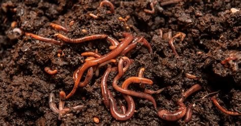

Bienvenido
creemos en la fuerza transformadora de la naturaleza para crear un mundo más sostenible. Nuestro
proyecto de lombricultura se dedica a convertir desechos orgánicos en valioso abono natural,
promoviendo una agricultura ecológica y saludable para todos. Mediante el uso de lombrices californianas,
transformamos restos de comida, hojas y otros residuos orgánicos en humus rico en nutrientes, ideal para
enriquecer el suelo y mejorar la salud de las plantas.
Nuestro compromiso es brindar una alternativa responsable para el manejo de residuos y ofrecer productos ecológicos
y que apoyen a agricultores, jardineros cualquier persona interesada en cultivar de manera sostenible.
En [Nombre del Proyecto] estamos orgullosos de contribuir a la regeneración de los suelos y la preservación del medio.
¡Únete a nosotros en este viaje hacia un futuro más verde! 